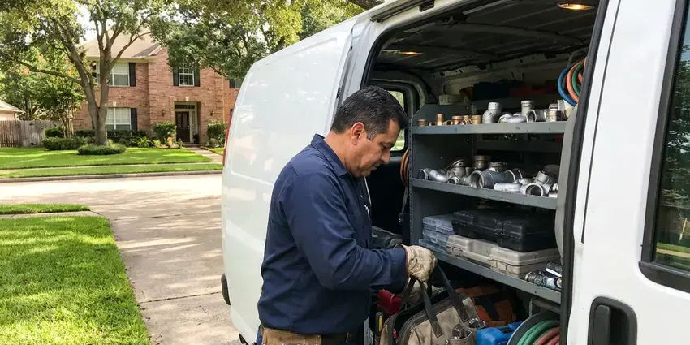

Leak Detection in The Hammocks, FL
Our leak detection specialists in The Hammocks, FL mark the leak within inches so the repair is small, quick and affordable.
- Licensed & Insured
- Minimal Wall and Floor Damage
- Written Report for Insurance
- Fast, Accurate Detection

Find and Fix Your Leaks Quickly in The Hammocks, FL.
Our team is ready to provide the accurate leak detection you need to protect your home.
Dependable Leak Detection Services in The Hammocks, FL
HDF Plumbing specializes in professional leak detection, relying on modern equipment to locate leaks that are often out of sight. From dripping pipes behind walls to elusive slab leaks under your foundation, we find the source of the problem before it escalates.
Our expertise includes:
- Slab leak detection with acoustic listening devices.
- Acoustic listening and ground microphones to detect pressurized leaks
- Detecting slab leaks under concrete foundations.

Additional Plumbing Maintenance Services in The Hammocks, FL
Our maintenance and specialty plumbing services in The Hammocks, FL protect your home year-round and extend the life of every system.


Customers
Why Choose HDF Plumbing for Leak Detection in The Hammocks, FL?
Hidden leaks can lead to serious foundation problems and mold growth if not addressed quickly. Our proactive approach saves homeowners real repair costs down the line.
- Damage Prevention, Early leak detection prevents serious water damage to your home's structure, foundation and personal belongings.
- Advanced Tools, We use acoustic listening devices, thermal imaging cameras and tracer gas to locate leaks with precision.
- Accurate Location, Our technicians use specialized tools like acoustic detectors and thermal cameras to pinpoint leaks without unnecessary demolition.
Citywide Coverage
We understand that a plumbing leak can be an emergency, which is why our service extends across all of The Hammocks, so residents always have access to professional help when they need it most.
Experienced Team
Our leak detection technicians are trained directly on acoustic and thermal equipment, which takes practice to use well. They have located leaks under slabs, behind tile and beneath long driveways.
Safety-First Approach
When dealing with potential gas leaks or water damage, our technicians adhere to strict safety protocols, using proper ventilation and shut-off procedures to prevent any hazards.
Trusted Certified The Hammocks Plumbing Services Professionals
At HDF Plumbing, we take pride in providing certified plumbing services throughout The Hammocks, FL. Backed by leading industry credentials, our experienced plumbers combine technical skill with genuine customer care. Whether it is repair, installation, or maintenance, we follow strict safety and quality standards to deliver lasting results you can trust.
Call Us Now PHCC Plumbing Contractor Recognition
PHCC Plumbing Contractor Recognition Better Business Bureau (BBB) Accreditation
Better Business Bureau (BBB) Accreditation Angi Certified Pro
Angi Certified Pro ISO 9001 Quality Management Certification
ISO 9001 Quality Management CertificationAccurate Leak Detection Services in The Hammocks, FL
Hidden Wall and Ceiling Leak Detection in The Hammocks
Leaks inside walls and ceilings often show up as stains, bubbling paint, soft drywall or a musty smell. We use thermal cameras to find temperature differences caused by water, then confirm with moisture meters. Acoustic tools help when the leak is on a pressurized line. Pinpointing the source lets us cut a small, neat access opening.

PEX and Copper Pipe Leak Detection in The Hammocks, FL
Whether your The Hammocks home has modern PEX plumbing or traditional copper pipes, leaks can occur. We are experienced in detecting leaks in all common piping materials found in Florida homes. Our tools are designed to work effectively with both metallic and non-metallic pipes, so no matter your plumbing system, we can reliably locate any leak. We handle everything from pinhole leaks to joint failures.
Fixture and Appliance Leak Detection in The Hammocks, FL
Running toilets, worn faucet cartridges and leaking water heater connections waste more water than most people think. A silent toilet leak can lose hundreds of gallons a day. We check flappers, fill valves, supply lines, softeners and water heater fittings. These repairs are typically quick and inexpensive.
Commercial Leak Detection in The Hammocks
HDF Plumbing offers complete leak detection services for commercial properties throughout The Hammocks. Businesses cannot afford the downtime or damage caused by undetected leaks. We work efficiently to locate leaks in complex commercial plumbing systems, including large water mains, fire suppression lines and HVAC systems. Our goal is to minimize disruption to your operations while preserving the integrity of your building's plumbing.
Advanced Leak Detection Technology in The Hammocks
HDF Plumbing invests in modern leak detection technology to provide precise and efficient service. Our tools include high-resolution thermal cameras, sensitive acoustic sensors, non-toxic tracer gas and digital moisture meters. This equipment allows us to identify leaks in many materials, from copper and PVC to PEX, with minimal disruption to your property.
Irrigation and Yard Leak Detection in The Hammocks, FL
Drip and sprinkler systems are a common source of hidden water loss in many yards. A cracked lateral or a stuck valve can waste thousands of gallons before anyone notices. We test the irrigation system separately from the house and trace leaks along buried lines. Many water providers recommend checking irrigation first when bills spike in summer.
Pool and Spa Leak Detection in The Hammocks
Summer heat and wind can evaporate a lot of pool water, so it can be hard to tell normal loss from a leak. A bucket test compares evaporation to actual water loss. We then pressure test plumbing lines and use dye testing around lights, skimmers and fittings. Finding the leak safeguards the pool shell and the soil around it.

Gas Leak Detection Services in The Hammocks
Gas leaks are very dangerous and require immediate professional attention. Our team is equipped with highly sensitive gas leak detectors to promptly identify the location and severity of any gas escape. We put safety first and will guide you through the necessary steps, including shutting off the gas supply and coordinating with your utility company, to ensure your home is secure.
Leak Detection Service Near Me in The Hammocks, FL
When you suspect a leak, getting a fast answer saves water, money and damage. Our technicians work throughout The Hammocks and can usually schedule a test within a day. We bring all of our detection equipment on the initial visit.
When you need a plumbing company that understands the needs of The Hammocks homes and businesses, HDF Plumbing is here. We pride ourselves on being easy to reach and providing top-tier leak detection that residents can trust, no matter where they are located in the area.
HDF Plumbing at a Glance
- Fully licensed plumbing team covering The Hammocks, FL
- 24/7 emergency service with same-day scheduling
- Clear written estimates, no hidden fees
- 4.9-star rated by 739+ Florida customers
The Hammocks Map
The Hammocks Information
- Population
- 59,480
- Area codes
- 305/786/954
- Service area
- The Hammocks and communities within 40 miles
- Nearby
- Kendale Lakes, Kendall, Tamiami, Westchester
Effective leak detection is important for homes in The Hammocks, FL, where freeze risk in winter and soil movement under foundations can lead to costly hidden pipe damage. When a rare freeze is forecast, covering outdoor valves and letting a faucet drip typically does the job to prevent damage.
Expert Services
Trust our professionals for reliable HDF Plumbing solutions in The Hammocks, FL.
Our Specialized Plumbing Services in The Hammocks, FL
At HDF Plumbing, we provide a complete range of plumbing services across The Hammocks, FL. From leak detection to full system installations, our team ensures fast, precise, and affordable service for both residential and commercial properties. Explore our core services below:


Here Is How Our Leak Detection Process Works in The Hammocks, FL
Our leak detection process is designed for efficiency and accuracy, minimizing disruption to your home.
Request a Quote
Contact HDF Plumbing at (904) 925-7356 to describe your leak concerns. Our team will schedule a suitable time for an on-site assessment at your The Hammocks property.
On-Site Inspection
Our technicians arrive with dedicated equipment to conduct a thorough inspection. We use tools like acoustic sensors and thermal cameras to locate the leak's location.
Locate & Report
Once the leak is accurately located, we provide a detailed report and explain our findings. We'll discuss the best repair options and provide an clear estimate.
Frequently Asked Questions About Leak Detection in The Hammocks
Leak detection in The Hammocks typically costs $150 to $450 for a typical home, depending on the size of the system and the number of areas tested. Pool leak detection runs about $250 to $500. We tell you the price before we start.
Yes. Repairs we complete after detection carry a written workmanship warranty. Replacement parts include manufacturer coverage.
HDF Plumbing stands by the quality of our work. We offer warranties on our leak detection services and any follow-up repairs. Specific warranty details will be provided with your service agreement.
Most standard leak detection services can be completed within 1 to 3 hours. More complex cases, such as multiple leaks or hard-to-access areas like under a slab, might take longer to precisely pinpoint.
We use acoustic ground microphones, thermal imaging cameras from brands like FLIR, line tracers, moisture meters and pressure test gauges. Each tool helps confirm a different type of leak. Using several together gives accurate results.
Many homeowners policies cover the cost of finding and accessing a sudden leak, though coverage varies. We provide a written report with photos to back up your claim. Check with your insurer about your specific policy.
Yes, HDF Plumbing understands that some leaks are emergencies. We offer fast emergency leak detection services to address critical situations like burst pipes or significant water intrusion, minimizing damage to your property. Call us right away for urgent assistance.
While you can check for obvious leaks like dripping faucets, hidden leaks require professional tools and expertise. DIY attempts can often misread the problem or cause further damage, especially with slab or gas leaks.
What People Are Saying About Our Plumbing Experts?

Patricia H.
We had a slab leak that two other companies could not find. HDF Plumbing located it in under an hour, explained our options, and the price matched the quote to the dollar.
Slab Leak Repair · Westchester, FL
Emily R.
I called HDF Plumbing for plumbing repair, and the technician was fast, polite, and thorough. They explained the problem clearly and fixed it the same day. I will definitely hire them again. Highly recommended!
Plumbing Repair · Kendale Lakes, FL
James P.
Our commercial plumbing system had a leak under the sink, and HDF Plumbing handled it professionally. The plumbers arrived quickly and restored everything without disruption to our customers.
Commercial Plumbing · Kendall, FLRobert G.
The trenchless sewer replacement saved our front yard. They walked us through the camera inspection footage first so we knew exactly what we were paying for.
Sewer Line Replacement · Westchester, FL
Daniel K.
A pipe burst at 11 pm and they actually answered. The plumber showed up within the hour, shut everything down, and had us back to normal the next morning. Could not ask for more.
Emergency Plumbing · Doral, FL
Mark T.
When our office needed drain cleaning, HDF Plumbing provided quick, reliable service. The plumber arrived on time and made sure every drain flowed perfectly before leaving. Very satisfied.
Drain Cleaning · Kendall, FL